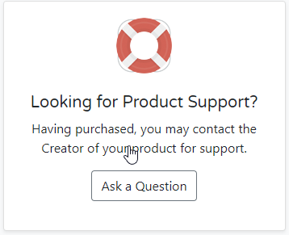
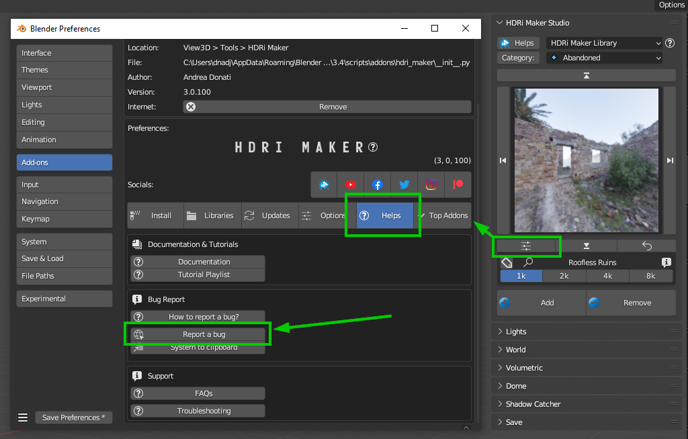

Guidelines for bugreport
I can guarantee the resolution of bugs only if the product has been purchased through our official channels (extreme-addons.com, blendermarket.com, gumroad.com)
In addition, sometimes some versions of Blender are not official, have different APIs from the official version, unfortunately not always these versions respect the official APIs, and therefore it is not possible to guarantee the functionality of our addons at 100%, this cannot be considered a bug, but a compatibility problem with the unofficial versions of Blender in question.
Make sure it’s a bug
First of all, make sure it’s really a bug, and not a configuration or usage problem. Also check this page: https://github.com/ExtremeAddons/hdri_maker/issues if the bug has not already been reported, you can start thinking of doing it really.
How to report the bug
Method 1:
If you bought on BlenderMarket You can contact me through the messaging system of Blendermarket, this is really good because I can also see if you are really a user. So you will have the assistance worthy of a customer.
Log into your account, then messages can be sent by clicking under the lifebelt icon in HDRi Maker page Ask a Question in this page: https://blendermarket.com/products/hdri-maker
{kind=link}
If you bought on Gumroad You can contact on tredistudio@hotmail.com or info@extreme-addons.com
Method 2:
( Best Method Requires to be registered on Github )
If you have installed the HDRi Maker addon and are able to go to its preferences, you can use the “Report Bug” button it will precompile the bug report so that you only have to enter the description of the bug, and send it.
{kind=link}
Note
If the button does not work, use this link and create a new Report: https://github.com/ExtremeAddons/hdri_maker/issues/new if you are not registered on github, you will be asked to register, once registered, you can send the bug report.
Method 3:
Use the “System To Clipboard” button to copy the system information, and paste it into the bug report, now you can paste the system information and think of contacting me on BlenderMarket (If you are a Blendermarket user) https://blendermarket.com/products/hdri-maker
Or you can contact me on tredistudio@hotmail.com or info@extreme@addons.com
Note
For practical reasons, it is better to report bugs via github, this allows you to keep track of all the bugs reported by our users, this also allows us to make the solution of bugs public, so that everyone can benefit from the reports and check that the bug has been fixed.